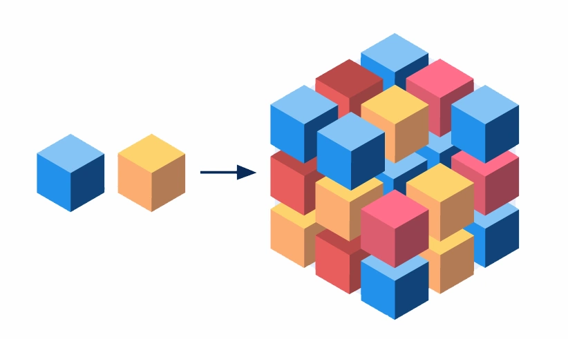

Which pattern to choose?
MACH architecture
M
Microservices
A set of independent components
Its own function.
API-First. To share data and functionality

Cloud-Native. Designed for the cloud
Headless. Is separate from the front end
Advantages. Flexible
Advantages. Flexible. Any can be changed
Advantages. Flexible. Different technologies
Advantages. Scaling based on specific demands
Advantages. Deploy faster
Disadvantages. Team Coordination

Disadvantages. Team Coordination

Disadvantages. Communicate over a network
Do you build modern apps?